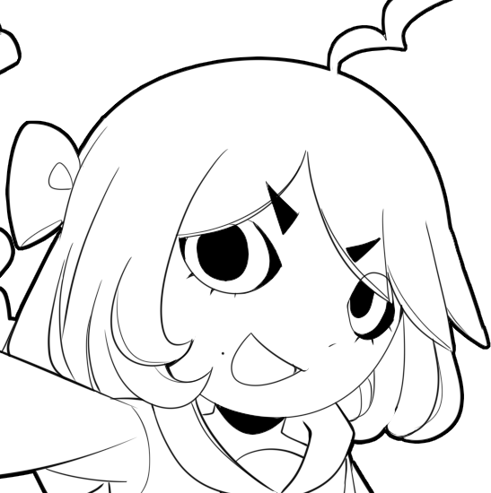

Real college has started, i find myself to be exited, i hope to learn many things in web development. if it goes well i will start to study back end stuff too, i enjoy programming its one of my favorite hobbies, other than that i find myself also to be finally visioning a story, im ready for that tho currently im brainstorming
would not call this a proper website update but i do draw allot so im uploading them still here, art ive already posted on twitter i found a new brush on ibis paint that i really enjoy, it can draw very pretty lines which i like. im also fixing bugs
I haven't updated for a while due to being busy with other endeavors, graduation, financial decisions for my start of college, and of course practicing with art and starting animation. I strive to acquire all artistic skills for my multimedia project. Not gonna lie, several times it has almost driven me to tears with how a beginner's process is; you kind of get frustrated and almost want to give up. The same thing goes with game making. But art technically has no shortcuts unless you're skipping some steps. It's like you need willpower to keep on going. If you skip on anatomy, you will eventually find yourself stuck because you realize you will be needing it, for example. It is kind of annoying, I won't lie, but I keep on pushing! It is slowly getting better so I'm glad!
I normally update every saturday and wednesday, but im rn suffering in the typical uterus month, they punish you for not wanting an extra ber, typical, well another extra note My fellow graveyards, we hit 1k followers on twitter for that i remain for always grateful, i am very happy that people enjoy my work, Tysm for your support, many loves i appriciate it, from the main man mallie~ DTNE
I mustered the strenght to update the website today, big hopes, hard work pays off, tommorow i will be entering a college meeting. i will update the website twice a week! no specific days
